Секонд-хенды
Я люблю ходить по секонд-хендам и иногда перепродаю найденные там вещи.
TikTok · Telegram
Я являюсь автором TikTok-аккаунта «Ваня хватит избегать гостей» и автором Telegram-канала.
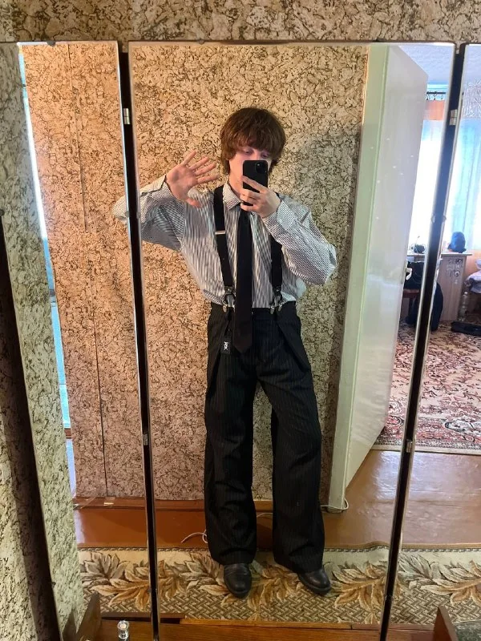
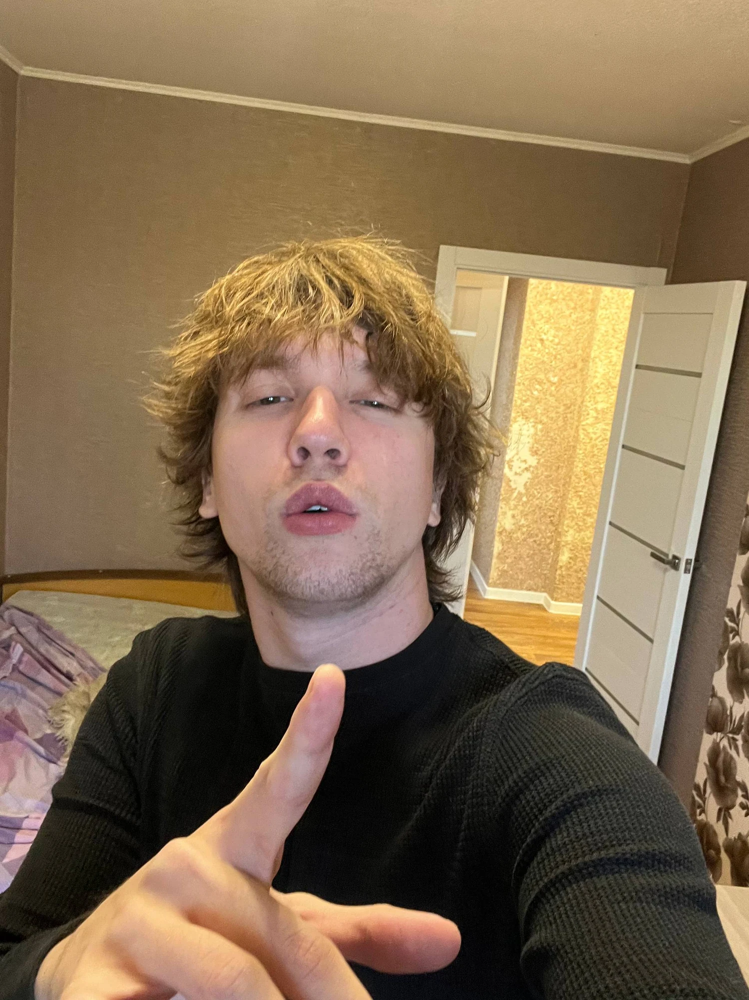
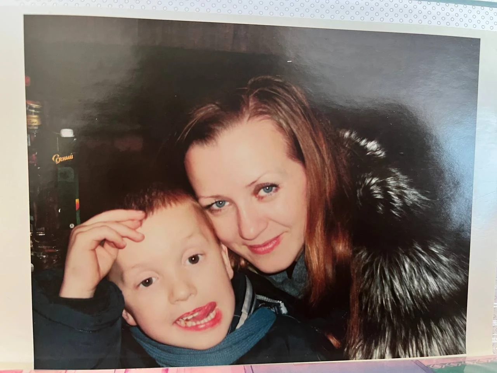
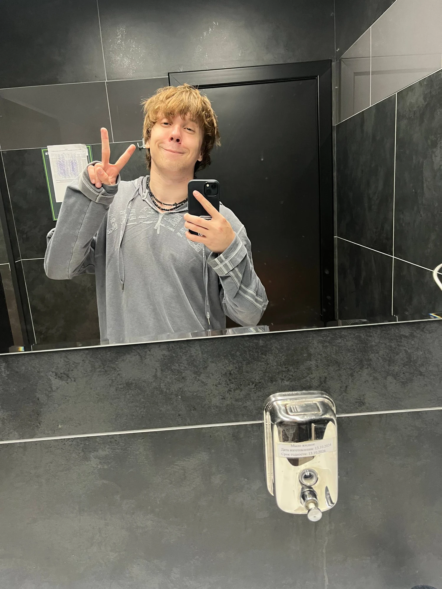
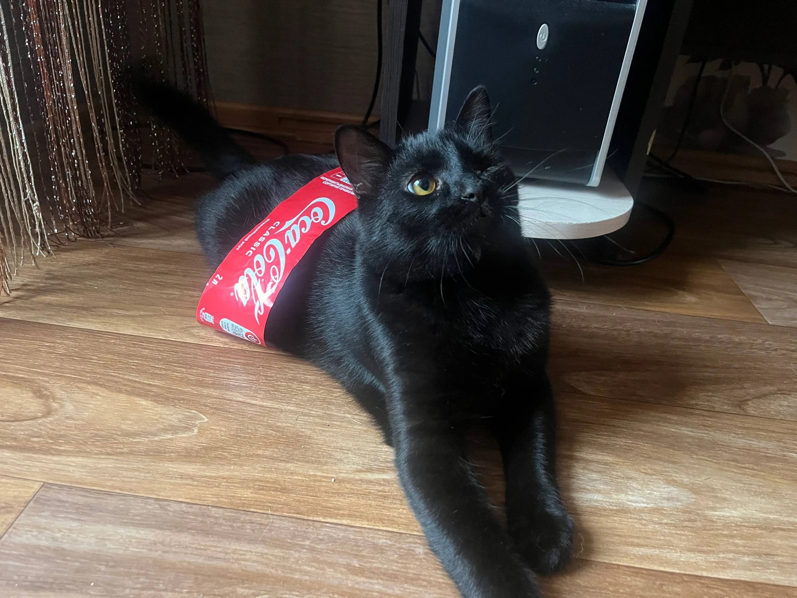
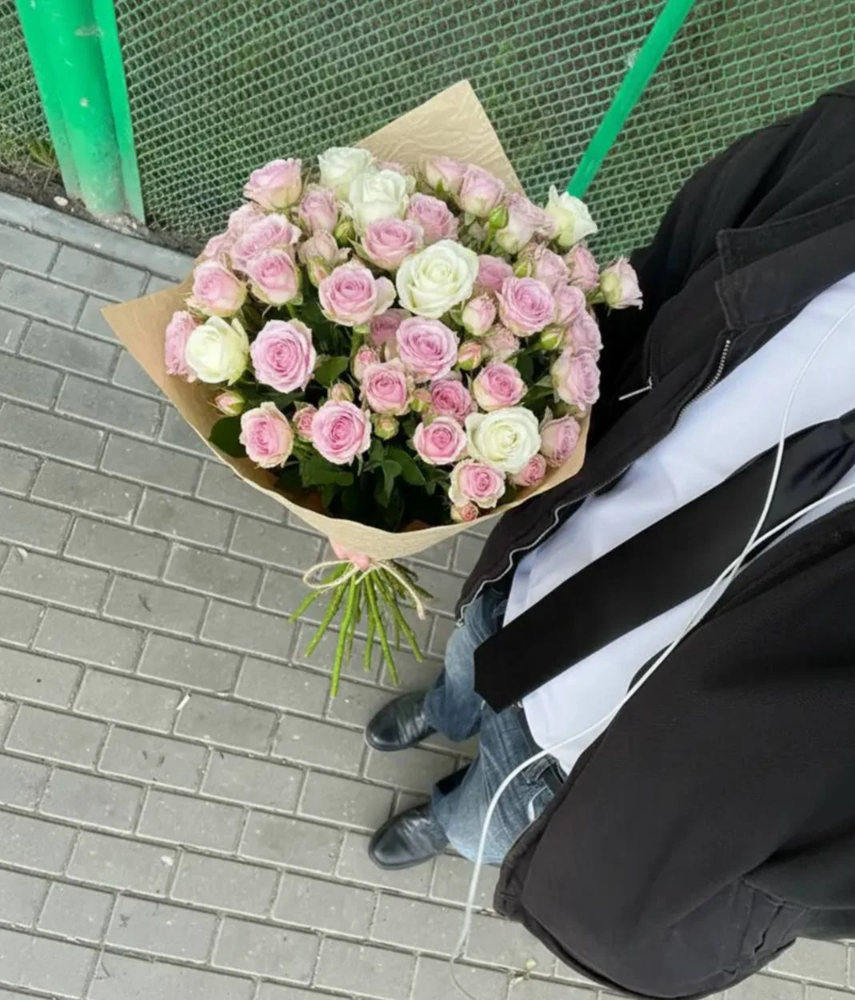
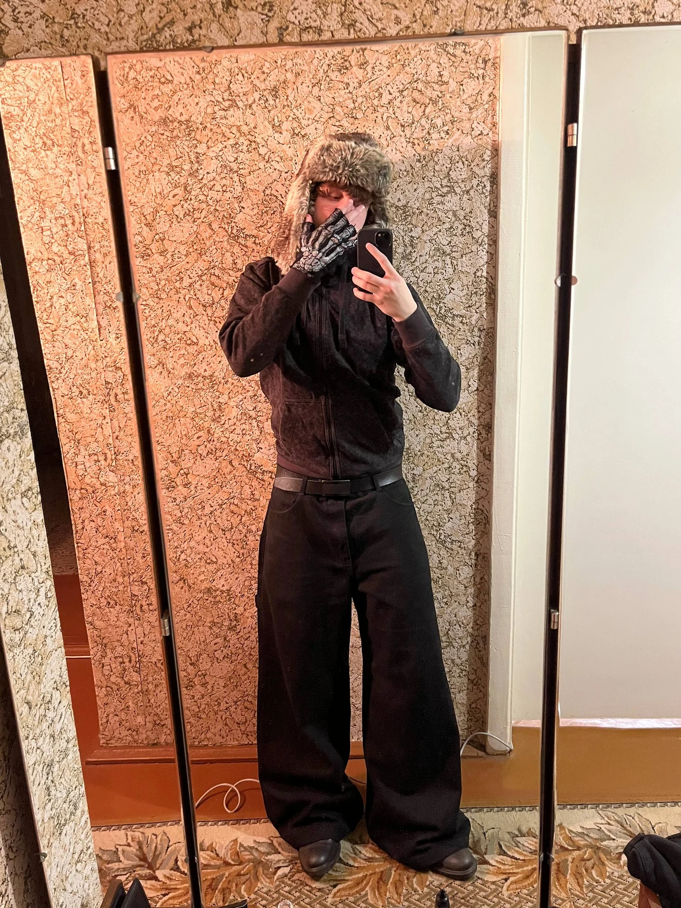
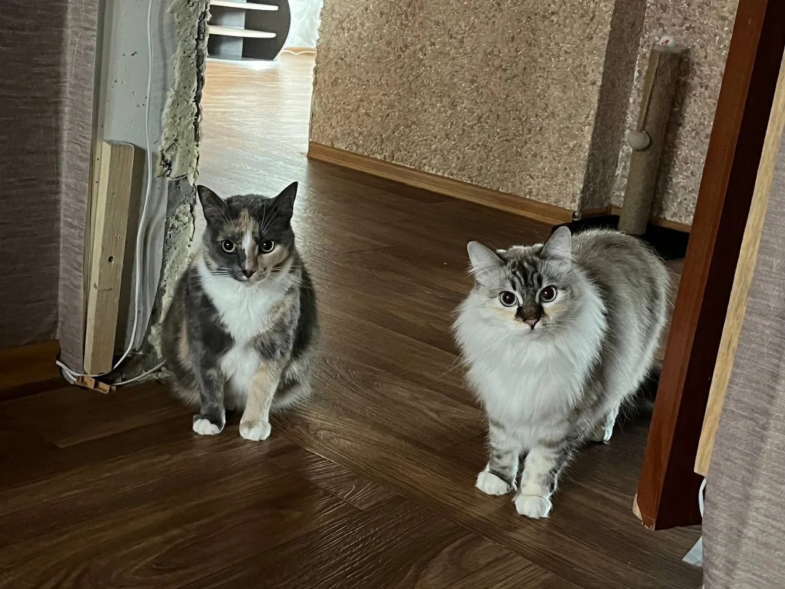
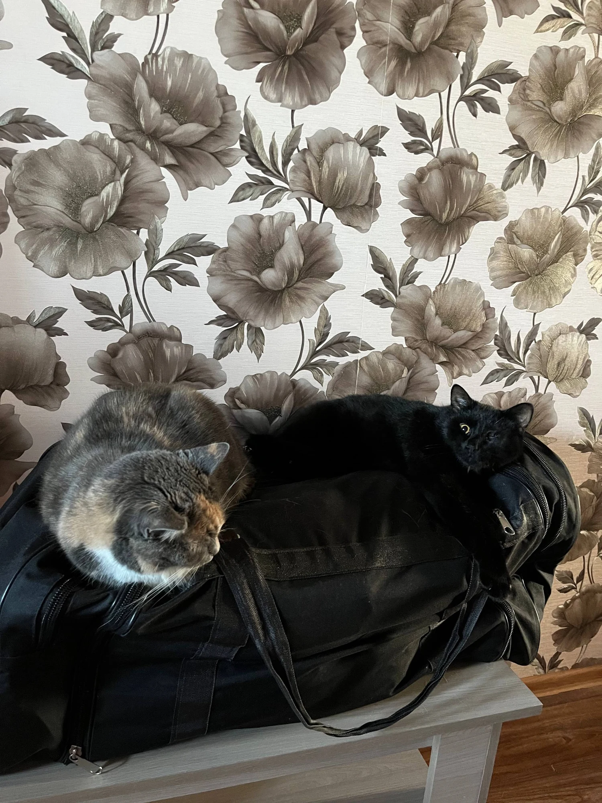
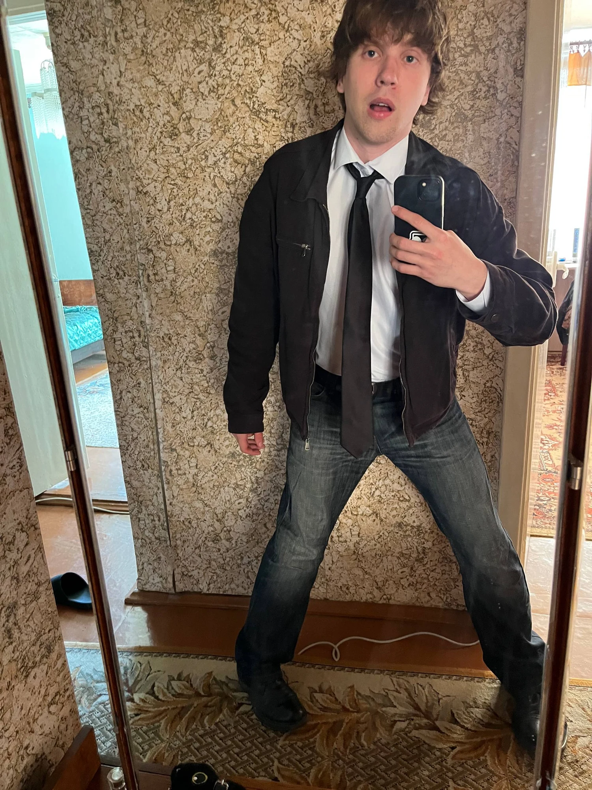
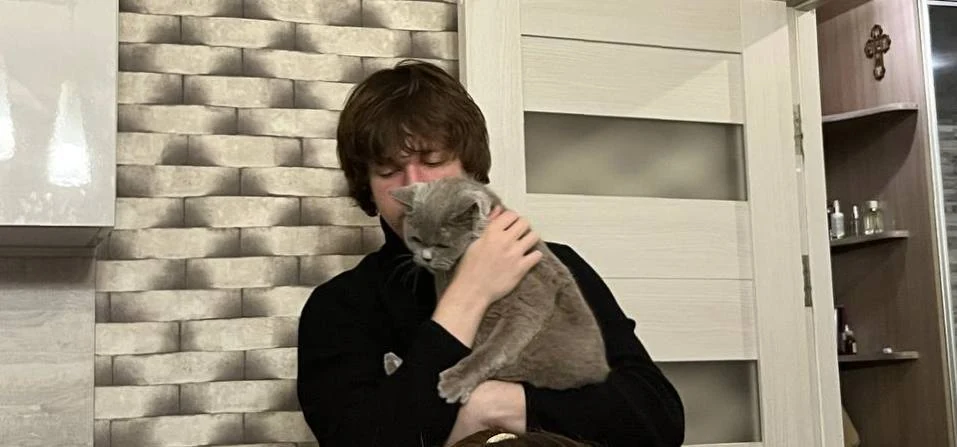
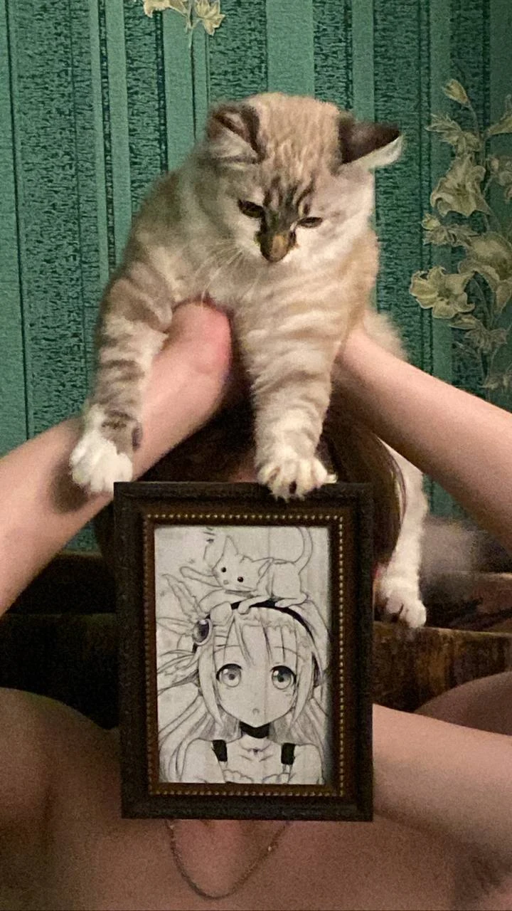
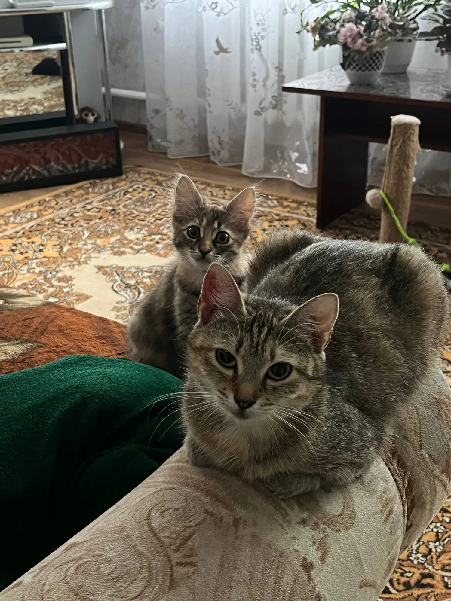
Коротко обо мне
Я родился 27 марта 2006 года в маленьком белорусском городе Сенно.
Занимался лёгкой атлетикой и бегал короткие дистанции. TikTok заинтересовал меня ещё в 2022 году, а в марте 2026-го меня стали замечать и аудитория начала активно расти.
В моём Telegram много обычной жизни: личные фотографии, архивные кадры и домашние животные. Белую кошечку зовут Хлоя, трёхцветную — Соня, чёрного кота — Кумар, а собаку — Шанти.
То, что мне близко
Я люблю ходить по секонд-хендам и иногда перепродаю найденные там вещи.
Моё предпочтение в кино — фильмы Квентина Тарантино.
Я люблю слушать Dean Blunt и буду слушать его, даже когда у меня будут седые волосы. Ещё мне близки Иван Кайф, Aquakey и творчество Ивана Матвейкина.
«Если ты не уделяешь достаточно времени тому, чтобы понять самого себя, то в итоге ты начнешь впитывать чужие представления о том, кем ты являешься».
Из моего Telegram-канала
Мой фотоархив
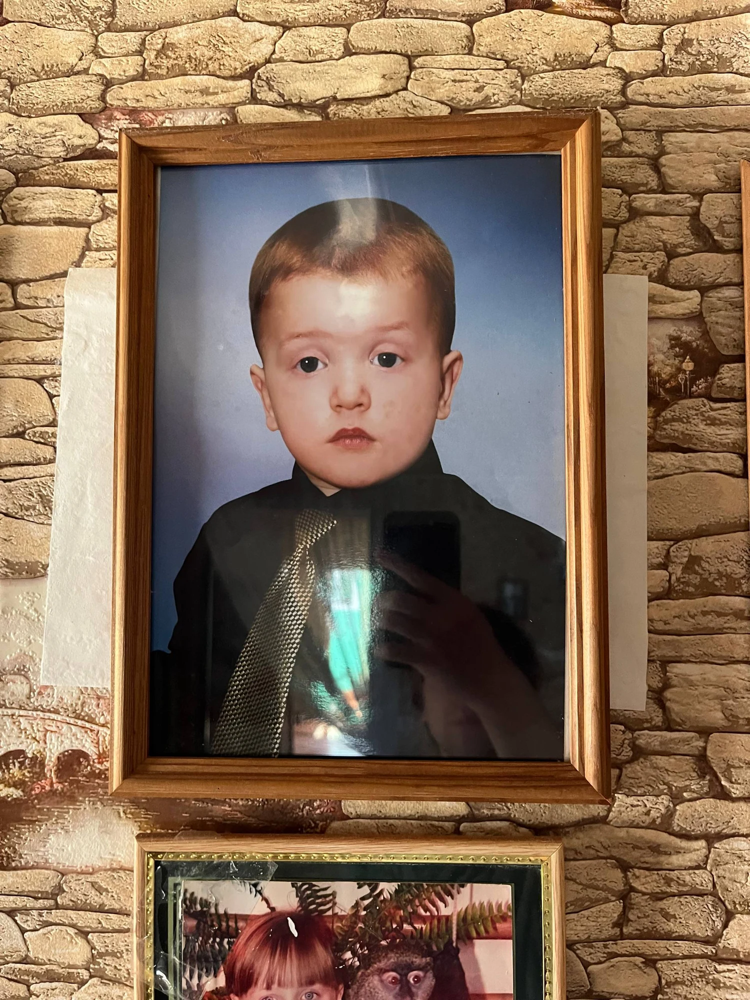
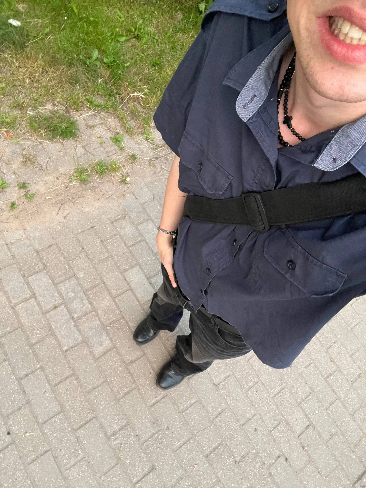